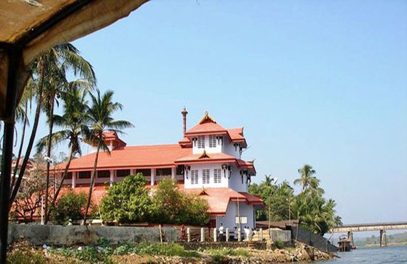

ERNAKULAM

Ernakulam is the central portion of the city of Kochi in Kerala, India and has lent its name to the Ernakulam district. Many major establishments, including the Kerala High Court, the office of the Kochi Municipal Corporation and the Cochin Shipyard are situated here.
Initially, Ernakulam was the headquarters of the Ernakulam District but was later shifted to Kakkanad, an eastern region in Kochi.[citation needed] Ernakulam was once the capital of the Kingdom of Cochin. Although under British suzerainty, specifically the East India Company, since the Anglo-Dutch Treaty of 1814, Rama Varma XII of the Kingdom of Cochin, about 1840, moved their capital from Mattancherry to Tripunithura. Fort Cochin Municipality was established in 1866 under the Madras Town Improvement Act of 1865, and municipal elections were first held in 1883. Ernakulam became a municipality in 1910. In the first state census of 1911, the population of Ernakulam was 21,901; 11,197 Hindus, 9,357 Christians, 935 Muslims, and 412 Jews.
Tourist Spots

Kerala Kathakali Centre

Chottanikkara Temple